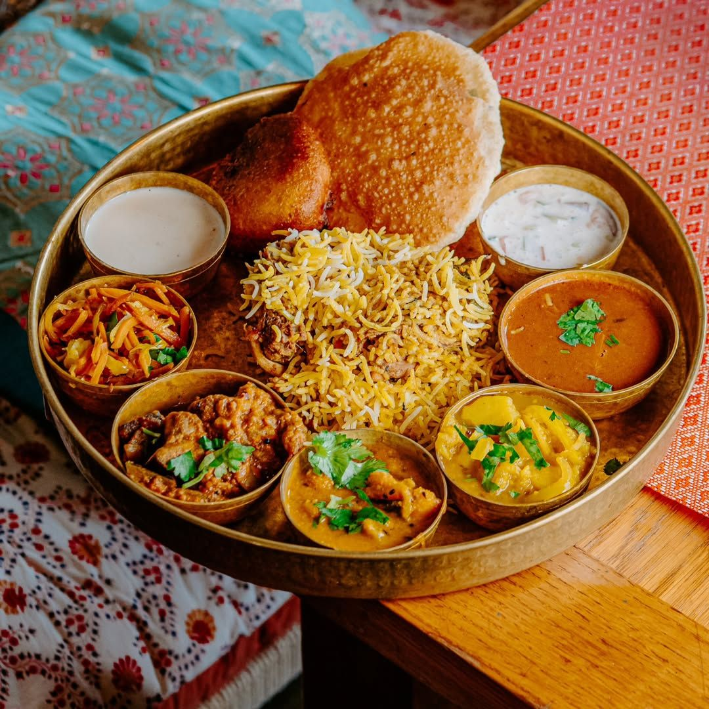
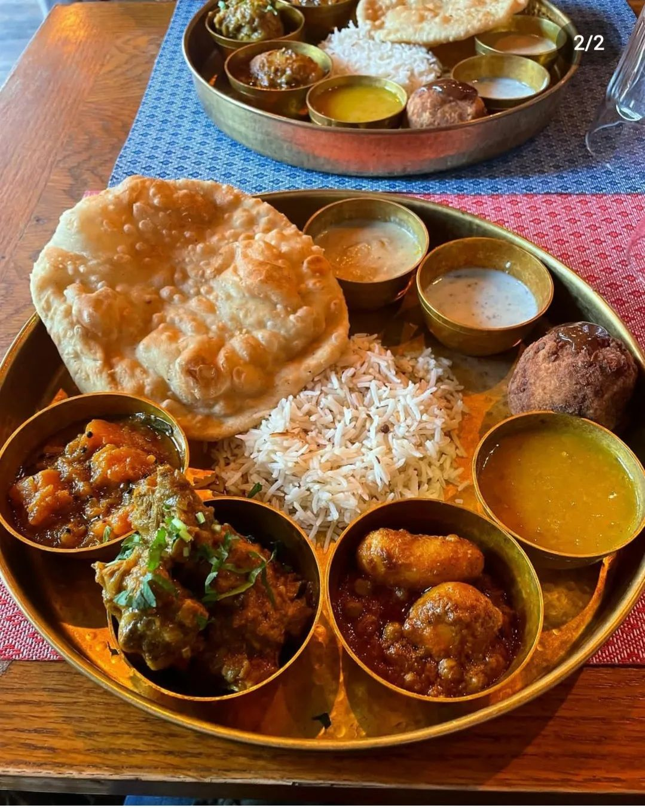
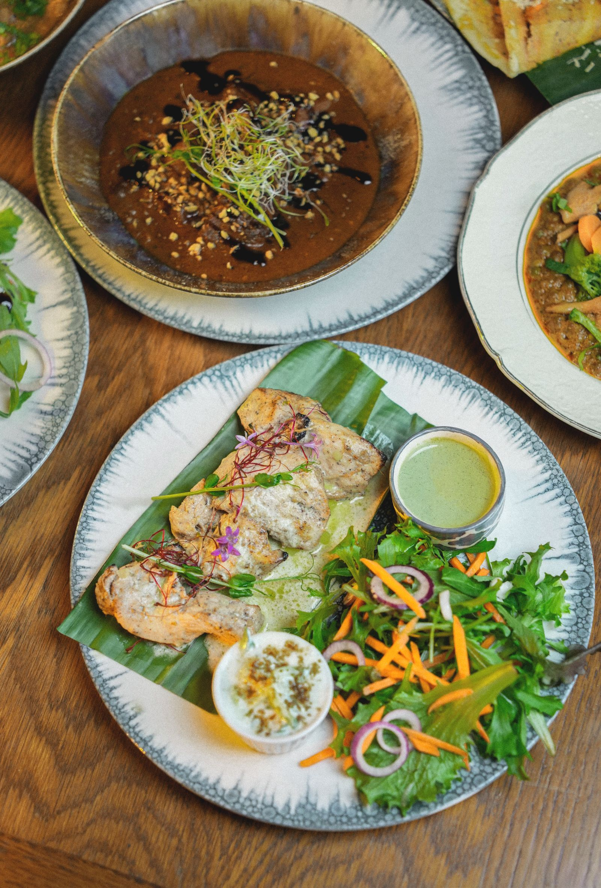

Mumbai
This week’s brunch thali comes from Mumbai.
Saturday lunch at Deb’s is built around one changing thali. It is savory, regional and different from the sweet-heavy brunch format commonly expected in Europe. The composition changes every week.



Every Saturday, 12:00 to 15:00. 26 Rue Lortet, 69007 Lyon, near Jean Macé. Closed on Sunday.
How it works
The composition changes every week, so the website does not carry a fixed thali menu. Instagram carries the current one.
Brunch questions
Where can I have brunch in Lyon 7?
At Deb’s Bistro, 26 Rue Lortet, near Jean Macé. Every Saturday lunch we serve an Indian brunch: one savoury, regional thali that changes every week.
What time is the brunch?
On Saturday, from 12:00 to 15:00. The restaurant is closed on Sunday.
Is it a sweet brunch?
No. It is a savoury Indian thali, regional and different from the sweet brunch people often expect in Europe.
Is it very spicy?
Spiced, not necessarily hot. We go easy on the chilli and you can add heat at the table.
How do I know this week’s thali?
The composition changes every week, so it is posted on our Instagram, @debs_bistro.
Can I book the Saturday brunch?
Yes, online on our reservation page or by phone on +33 4 72 71 49 11.